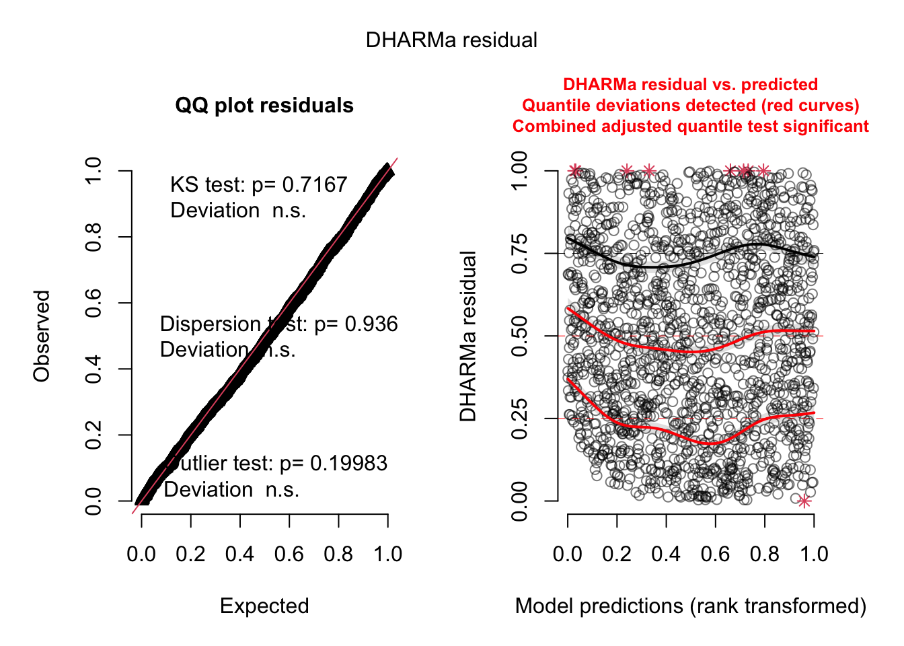
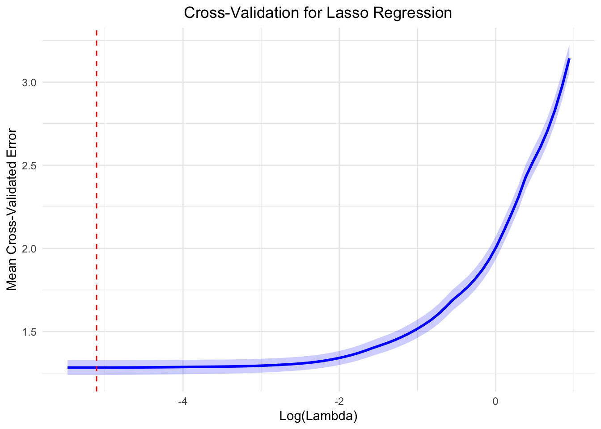
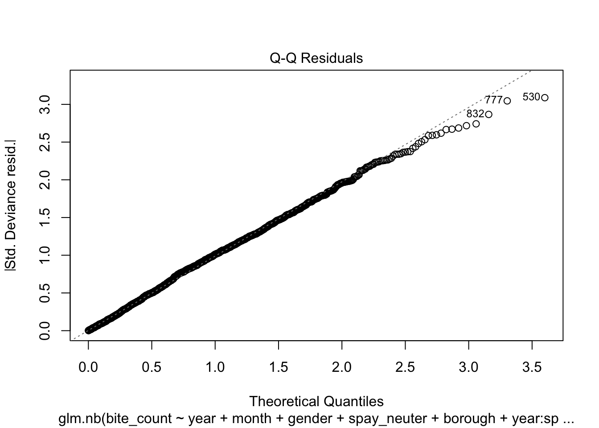
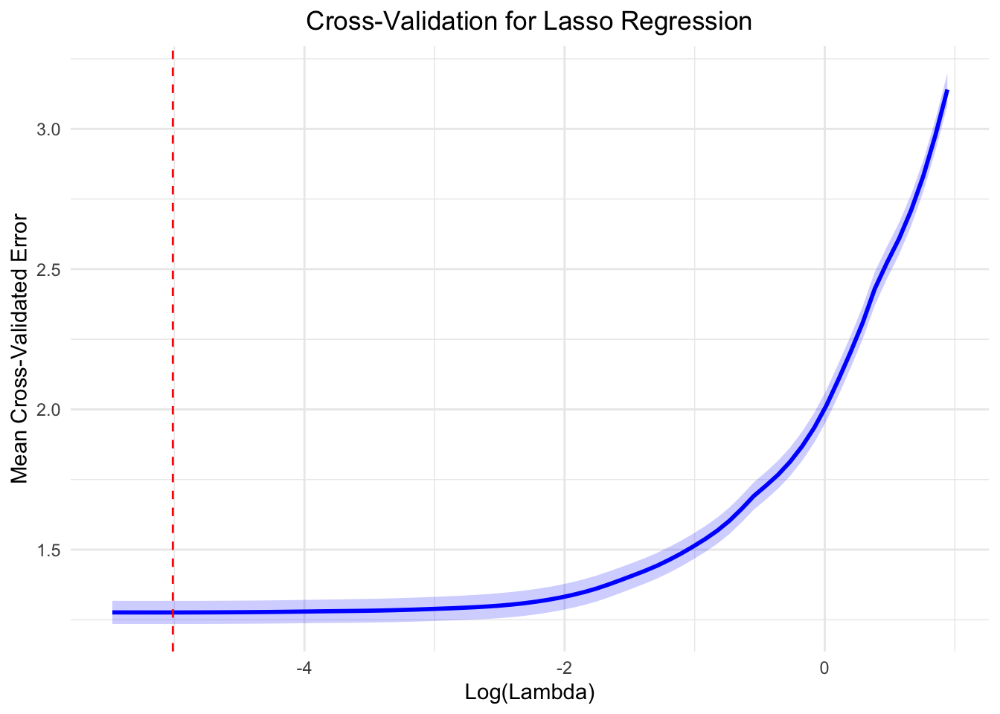

Main effects model
After employing Lasso regression for feature selection, the study
identified several key variables that influence the occurrence of dog
bite incidents. These variables include the year,
month, gender, spay_neuter, and
borough. These factors will be incorporated into a negative
binomial generalized linear model (glm.nb) to predict the
number of bite incidents.
Results
The results of the main effects model fitting are presented in the following table.
The dispersion parameter, \(\theta = 25.18\), indicates that the data exhibits overdispersion, meaning the variance is much larger than the mean. This justifies the use of the negative binomial regression model over a Poisson regression.
The deviance of the null model (a model with no predictors, only the intercept) is \(3914.5\). This represents the deviance of the fitted model with predictors included is \(1549.7\). The significant reduction in deviance indicates that the included predictors substantially improve model fit.
kable(
model_summary,
col.names = c("Term", "Estimate", "SE", "Statistic", "P-value", "Significance"),
caption = "Summary of Negative Binomial Regression Results"
) %>%
kable_styling(bootstrap_options = c("striped", "hover", "condensed"), full_width = TRUE) %>%
scroll_box(height = "400px")| Term | Estimate | SE | Statistic | P-value | Significance |
|---|---|---|---|---|---|
| (Intercept) | 1.0819840 | 0.0594554 | 18.1982535 | 0.0000000 | *** |
| year2016 | 0.0697408 | 0.0415739 | 1.6775135 | 0.0934421 | |
| year2017 | 0.1535577 | 0.0409067 | 3.7538482 | 0.0001741 | *** |
| year2018 | 0.0752355 | 0.0415347 | 1.8113915 | 0.0700803 | |
| year2019 | 0.0942075 | 0.0413851 | 2.2763627 | 0.0228243 |
|
| year2020 | -0.2791303 | 0.0454262 | -6.1446913 | 0.0000000 | *** |
| year2021 | -0.2870956 | 0.0458795 | -6.2576004 | 0.0000000 | *** |
| month2 | 0.0025297 | 0.0587213 | 0.0430799 | 0.9656378 | |
| month3 | 0.0299763 | 0.0582325 | 0.5147697 | 0.6067140 | |
| month4 | 0.1274838 | 0.0571182 | 2.2319298 | 0.0256196 |
|
| month5 | 0.1807138 | 0.0565828 | 3.1937937 | 0.0014042 | ** |
| month6 | 0.2447988 | 0.0559689 | 4.3738342 | 0.0000122 | *** |
| month7 | 0.2019422 | 0.0565467 | 3.5712485 | 0.0003553 | *** |
| month8 | 0.2276408 | 0.0563495 | 4.0397994 | 0.0000535 | *** |
| month9 | 0.1429531 | 0.0571015 | 2.5034925 | 0.0122974 |
|
| month10 | 0.0912030 | 0.0577714 | 1.5786867 | 0.1144079 | |
| month11 | 0.0888914 | 0.0577247 | 1.5399200 | 0.1235799 | |
| month12 | 0.0185023 | 0.0588556 | 0.3143674 | 0.7532420 | |
| genderM | 0.8851206 | 0.0245208 | 36.0966638 | 0.0000000 | *** |
| spay_neuterNeutered | -0.1122779 | 0.0228317 | -4.9176281 | 0.0000009 | *** |
| boroughBrooklyn | 0.3051114 | 0.0361136 | 8.4486684 | 0.0000000 | *** |
| boroughManhattan | 0.2376617 | 0.0365134 | 6.5088955 | 0.0000000 | *** |
| boroughQueens | 0.4981809 | 0.0349699 | 14.2459962 | 0.0000000 | *** |
| boroughStaten Island | -0.5517553 | 0.0446767 | -12.3499477 | 0.0000000 | *** |
Year: Some years (e.g., 2017, 2019) show statistically significant
coefficients, suggesting that the number of bite incidents varies
significantly across years. year2021 (Coefficient =
-0.28710, p < 0.001) indicates a significant decrease in
bite counts compared to year2015.
Month: Some months show no significant effects on bite counts (e.g., month2: p = 0.97; month3: p = 0.61). Several months (e.g., May, June, August) have significant coefficients, indicating seasonality in bite incidents.
Gender: Male dogs (genderM) are associated with a significantly higher bite count, as indicated by the large positive coefficient.
Spay/Neuter: Neutered dogs are associated with a lower bite count, with a statistically significant negative coefficient.
Boroughs: Bite counts vary across boroughs, with Staten Island showing a significant negative association compared to the reference borough.
From the coefficient of fitting results, this study draws the following conclusions:
Different years have significantly impacted bite counts, particularly after 2020, where a notable reduction in incidents was observed. This might reflect external factors, such as the COVID-19 pandemic.
Monthly effects highlight significant seasonal variation, with summer months (e.g., June) showing higher bite counts.
Males are significantly more likely to be involved in bite incidents than females.
Neutered animals have significantly lower bite risks compared to non-neutered ones.
Brooklyn has significantly higher bite counts, while Staten Island has significantly fewer bites compared to Bronx. These differences might reflect variations in dog management policies, population density, or dog ownership practices across regions.
Evaluation
After obtaining the fitted results, it is crucial to perform a multicollinearity test on the model to ensure the reliability of the regression coefficients. Multicollinearity can severely affect the interpretability of the model and can lead to overinflated standard errors, making it difficult to discern the true effect of each predictor.
library(car)
vif_results <- vif(model) %>%
as.data.frame() %>%
rownames_to_column("Predictor") %>%
rename(
GVIF = GVIF,
DF = Df,
`GVIF^(1/(2*DF))` = `GVIF^(1/(2*Df))`
)
kable(
vif_results,
col.names = c("Predictor", "GVIF", "DF", "Scaled GVIF"),
caption = "Multicollinearity Check (GVIF)"
) |>
kable_styling(bootstrap_options = c("striped", "hover", "condensed"), full_width = TRUE)| Predictor | GVIF | DF | Scaled GVIF |
|---|---|---|---|
| year | 1.004775 | 6 | 1.000397 |
| month | 1.002312 | 11 | 1.000105 |
| gender | 1.003175 | 1 | 1.001586 |
| spay_neuter | 1.001316 | 1 | 1.000658 |
| borough | 1.005447 | 4 | 1.000679 |
Generalized Variance Inflation Factor (GVIF) measures the multicollinearity in the regression model. A GVIF value greater than 10 generally indicates a high multicollinearity issue. All GVIF values are close to 1, suggesting no significant multicollinearity.
Scaled GVIF adjusts GVIF based on the degrees of freedom to make it comparable across variables. It is defined as \(GVIF^{(1/(2*Df))}\). As shown in the table above, the GVIF and scaled GVIF are all close to 1, indicating that there is no significant multicollinearity in the final model.
As shown in the table above, results does not exhibit multicollinearity among the predictors, as all GVIF values and their scaled counterparts are well below the threshold of concern (commonly 10 or higher). This indicates that all predictors can be reliably used in regression model without the risk of biased coefficients caused by multicollinearity.
library(DHARMa)
residuals_sim = simulateResiduals(model)
plot(residuals_sim)
Q-Q Plot:
- KS Test p-value (0.7167): Indicates that the residuals do not significantly deviate from a uniform distribution. This suggests that the model residuals are well-behaved.
- Dispersion Test p-value (0.936): Suggests there is no significant over- or under-dispersion in the model, further supporting the appropriateness of the negative binomial distribution.
- Outlier Test p-value (0.19983): Shows that there are no significant outliers in the residuals, meaning that most predictions align with the observed data.
The residuals closely follow the expected line, indicating a good fit in terms of normality for the main effects-only model.
Residuals vs Predicted:
- The residuals appear to be well-distributed, with most points clustering around the 0.5 quantile line.
- The red curves (quantile deviations) show minor deviations, particularly near the tails (e.g., quantiles close to 0 and 1). However, these deviations are not substantial enough to indicate severe model misspecification.
- The presence of small red asterisks (*) at the upper quantiles suggests slight issues with model fit in extreme predictions, but these deviations are minor.
This shows some spread and potential systematic patterns, indicating the main effects model might not fully capture the variability in the data.
Model with interaction
To further increase the precision of the model fit, interaction terms between variables were added.
Results
model_all_interactions <- glm.nb(
formula = bite_count ~
year + month + gender + spay_neuter + borough +
year * month + year * gender + year * spay_neuter + year * borough +
month * gender + month * spay_neuter + month * borough +
gender * spay_neuter + gender * borough + spay_neuter * borough +
year * month * gender + year * month * spay_neuter + year * month * borough +
year * gender * spay_neuter + year * gender * borough + year * spay_neuter * borough +
month * gender * spay_neuter + month * gender * borough + month * spay_neuter * borough +
gender * spay_neuter * borough,
data = bites_by_group
)
model_stepwise <- stepAIC(model_all_interactions, direction = "both")After using stepwise reduction to simplify the model complexity, the variables of final negative binomial regression model are as follow:
data <- data.frame(
`Main Effect` = c("year", "month", "gender", "spay_neuter", "borough", " "),
`Double Interaction Effect` = c(
"year * spay_neuter",
"year * borough",
"month * spay_neuter",
"gender * spay_neuter",
"gender * borough",
"spay_neuter * borough"
)
)
knitr::kable(data, format = "pipe", align = "l", caption = "Final Negative Binomial Regression Model", escape = FALSE)| Main.Effect | Double.Interaction.Effect |
|---|---|
| year | year * spay_neuter |
| month | year * borough |
| gender | month * spay_neuter |
| spay_neuter | gender * spay_neuter |
| borough | gender * borough |
| spay_neuter * borough |
The final model with interaction is detailed in the following table. Initially, the intercept is 3.83 with a p-value near zero, indicating that the baseline level of the response variable (on a logarithmic scale) is significant when other variables are not considered. For the main effect variables, the years 2016, 2018, and 2019 show a significant increase in the log change of event counts compared to 2015; male dogs, compared to female dogs, exhibit stronger aggression, with a 10.59 times increase in the incidence of dog bite events, calculated as with \(e^{2.36}\). The coefficient for neutering, 0.3960, indicates a significant reduction in the log count of bite incidents for neutered dogs compared to unneutered dogs. Geographically, the coefficients for Manhattan and Staten Island are 0.72 and 0.48, respectively, showing significantly lower event counts compared to the Bronx. Regarding interaction terms, the years 2018, 2020, and 2021 show a significant reduction in interaction with the neutering status.
filter_model = glm.nb(bite_count ~ year + month + gender + spay_neuter +
borough + year:spay_neuter + year:borough + month:spay_neuter +
gender:spay_neuter + gender:borough + spay_neuter:borough,
data = bites_by_group)
filter_model_summary <- tidy(filter_model, exponentiate = TRUE, conf.int = TRUE)
kable(
filter_model_summary,
caption = "Summary of Negative Binomial Regression (with interactions) Results"
) %>%
kable_styling(bootstrap_options = c("striped", "hover", "condensed"), full_width = TRUE) %>%
scroll_box(height = "400px")| term | estimate | std.error | statistic | p.value | conf.low | conf.high |
|---|---|---|---|---|---|---|
| (Intercept) | 3.8266218 | 0.0917147 | 14.6321455 | 0.0000000 | 3.1897224 | 4.5699845 |
| year2016 | 1.3033610 | 0.0901036 | 2.9404628 | 0.0032772 | 1.0929752 | 1.5562867 |
| year2017 | 1.1385007 | 0.0922903 | 1.4054815 | 0.1598781 | 0.9504021 | 1.3649459 |
| year2018 | 1.3118411 | 0.0908169 | 2.9887793 | 0.0028009 | 1.0984502 | 1.5684738 |
| year2019 | 1.3122458 | 0.0905443 | 3.0011837 | 0.0026893 | 1.0994102 | 1.5681645 |
| year2020 | 0.8228914 | 0.1047046 | -1.8617234 | 0.0626421 | 0.6693712 | 1.0093955 |
| year2021 | 0.8059884 | 0.1072938 | -2.0102369 | 0.0444061 | 0.6520723 | 0.9933690 |
| month2 | 0.9729195 | 0.0695666 | -0.3946429 | 0.6931064 | 0.8487826 | 1.1149947 |
| month3 | 1.0105442 | 0.0684963 | 0.1531328 | 0.8782936 | 0.8835430 | 1.1557926 |
| month4 | 0.9934017 | 0.0684907 | -0.0966578 | 0.9229981 | 0.8685643 | 1.1361738 |
| month5 | 1.0680211 | 0.0672828 | 0.9780735 | 0.3280380 | 0.9361209 | 1.2187538 |
| month6 | 1.1690766 | 0.0657587 | 2.3755679 | 0.0175220 | 1.0278987 | 1.3302616 |
| month7 | 1.2098715 | 0.0654067 | 2.9127615 | 0.0035825 | 1.0645334 | 1.3757713 |
| month8 | 1.1509696 | 0.0664863 | 2.1147913 | 0.0344477 | 1.0104735 | 1.3114496 |
| month9 | 1.0335144 | 0.0680631 | 0.4843299 | 0.6281517 | 0.9044289 | 1.1811049 |
| month10 | 1.0959521 | 0.0673646 | 1.3601127 | 0.1737943 | 0.9604423 | 1.2508199 |
| month11 | 1.0178300 | 0.0683075 | 0.2587259 | 0.7958467 | 0.8902585 | 1.1637148 |
| month12 | 0.9873063 | 0.0689063 | -0.1853956 | 0.8529188 | 0.8625001 | 1.1300826 |
| genderM | 2.3603576 | 0.0546184 | 15.7238806 | 0.0000000 | 2.1222253 | 2.6290269 |
| spay_neuterNeutered | 0.3960162 | 0.1090476 | -8.4944592 | 0.0000000 | 0.3196063 | 0.4900996 |
| boroughBrooklyn | 1.1484679 | 0.1007295 | 1.3742626 | 0.1693602 | 0.9433984 | 1.4003372 |
| boroughManhattan | 0.7189159 | 0.1083180 | -3.0466848 | 0.0023138 | 0.5815085 | 0.8892388 |
| boroughQueens | 1.0052349 | 0.1004848 | 0.0519610 | 0.9585598 | 0.8261307 | 1.2250977 |
| boroughStaten Island | 0.4792828 | 0.1295018 | -5.6791829 | 0.0000000 | 0.3711956 | 0.6168309 |
| year2016:spay_neuterNeutered | 1.0612336 | 0.0738846 | 0.8043893 | 0.4211722 | 0.9181842 | 1.2266608 |
| year2017:spay_neuterNeutered | 1.1261719 | 0.0722120 | 1.6454912 | 0.0998686 | 0.9775818 | 1.2974768 |
| year2018:spay_neuterNeutered | 0.8361551 | 0.0738241 | -2.4238853 | 0.0153555 | 0.7234554 | 0.9662810 |
| year2019:spay_neuterNeutered | 0.8999070 | 0.0732977 | -1.4388429 | 0.1501950 | 0.7794484 | 1.0389210 |
| year2020:spay_neuterNeutered | 0.7093584 | 0.0832625 | -4.1242377 | 0.0000372 | 0.6023798 | 0.8349059 |
| year2021:spay_neuterNeutered | 0.7033678 | 0.0842494 | -4.1765924 | 0.0000296 | 0.5961124 | 0.8294237 |
| year2016:boroughBrooklyn | 0.6696158 | 0.1136113 | -3.5300282 | 0.0004155 | 0.5356558 | 0.8362826 |
| year2017:boroughBrooklyn | 0.8016684 | 0.1146289 | -1.9284860 | 0.0537947 | 0.6401252 | 1.0033867 |
| year2018:boroughBrooklyn | 0.6156245 | 0.1168101 | -4.1530513 | 0.0000328 | 0.4893635 | 0.7736536 |
| year2019:boroughBrooklyn | 0.6430267 | 0.1158853 | -3.8103961 | 0.0001387 | 0.5120816 | 0.8066385 |
| year2020:boroughBrooklyn | 0.9194226 | 0.1308903 | -0.6418304 | 0.5209833 | 0.7116333 | 1.1889894 |
| year2021:boroughBrooklyn | 0.9169286 | 0.1340716 | -0.6468607 | 0.5177221 | 0.7053947 | 1.1933845 |
| year2016:boroughManhattan | 0.7672008 | 0.1219690 | -2.1727381 | 0.0298000 | 0.6038442 | 0.9741476 |
| year2017:boroughManhattan | 1.0056926 | 0.1214035 | 0.0467566 | 0.9627072 | 0.7926301 | 1.2758780 |
| year2018:boroughManhattan | 1.0764166 | 0.1200012 | 0.6136403 | 0.5394531 | 0.8507054 | 1.3618503 |
| year2019:boroughManhattan | 1.0374713 | 0.1197084 | 0.3072990 | 0.7586158 | 0.8203777 | 1.3117924 |
| year2020:boroughManhattan | 1.3188623 | 0.1365701 | 2.0265749 | 0.0427059 | 1.0096615 | 1.7248937 |
| year2021:boroughManhattan | 1.2422379 | 0.1397488 | 1.5521743 | 0.1206205 | 0.9452097 | 1.6350671 |
| year2016:boroughQueens | 0.8140961 | 0.1136471 | -1.8097847 | 0.0703292 | 0.6512614 | 1.0169129 |
| year2017:boroughQueens | 1.0867730 | 0.1135860 | 0.7325963 | 0.4638047 | 0.8696893 | 1.3576659 |
| year2018:boroughQueens | 1.0448140 | 0.1131393 | 0.3874768 | 0.6984032 | 0.8367859 | 1.3040097 |
| year2019:boroughQueens | 1.0220010 | 0.1127442 | 0.1930255 | 0.8469390 | 0.8191320 | 1.2745219 |
| year2020:boroughQueens | 1.1261820 | 0.1306208 | 0.9097565 | 0.3629509 | 0.8722475 | 1.4557937 |
| year2021:boroughQueens | 1.2916043 | 0.1315466 | 1.9452047 | 0.0517504 | 0.9988859 | 1.6732506 |
| year2016:boroughStaten Island | 0.8644796 | 0.1431569 | -1.0172580 | 0.3090307 | 0.6528959 | 1.1446386 |
| year2017:boroughStaten Island | 0.9866068 | 0.1425223 | -0.0946074 | 0.9246267 | 0.7462658 | 1.3050651 |
| year2018:boroughStaten Island | 0.8321089 | 0.1483069 | -1.2392683 | 0.2152461 | 0.6218356 | 1.1124636 |
| year2019:boroughStaten Island | 0.7854488 | 0.1468059 | -1.6450292 | 0.0999638 | 0.5887784 | 1.0471310 |
| year2020:boroughStaten Island | 0.8911374 | 0.1789898 | -0.6439284 | 0.5196219 | 0.6254889 | 1.2624986 |
| year2021:boroughStaten Island | 0.7210547 | 0.1929227 | -1.6951883 | 0.0900397 | 0.4913490 | 1.0477969 |
| month2:spay_neuterNeutered | 1.0975279 | 0.1046014 | 0.8896655 | 0.3736455 | 0.8942084 | 1.3475758 |
| month3:spay_neuterNeutered | 1.0590365 | 0.1038588 | 0.5522843 | 0.5807536 | 0.8640731 | 1.2983755 |
| month4:spay_neuterNeutered | 1.3564416 | 0.1010573 | 3.0167522 | 0.0025550 | 1.1130392 | 1.6541988 |
| month5:spay_neuterNeutered | 1.3064944 | 0.0998785 | 2.6767279 | 0.0074345 | 1.0745154 | 1.5895806 |
| month6:spay_neuterNeutered | 1.2478170 | 0.0984299 | 2.2492726 | 0.0244952 | 1.0291517 | 1.5138497 |
| month7:spay_neuterNeutered | 1.0553692 | 0.0998428 | 0.5397557 | 0.5893656 | 0.8679186 | 1.2837758 |
| month8:spay_neuterNeutered | 1.2270280 | 0.0991555 | 2.0633748 | 0.0390770 | 1.0105739 | 1.4907576 |
| month9:spay_neuterNeutered | 1.2860456 | 0.1009214 | 2.4927527 | 0.0126757 | 1.0555295 | 1.5678926 |
| month10:spay_neuterNeutered | 1.0214410 | 0.1025915 | 0.2067852 | 0.8361776 | 0.8354704 | 1.2491730 |
| month11:spay_neuterNeutered | 1.1718216 | 0.1024908 | 1.5470612 | 0.1218485 | 0.9587419 | 1.4329166 |
| month12:spay_neuterNeutered | 1.0804447 | 0.1049678 | 0.7371092 | 0.4610559 | 0.8795844 | 1.3274456 |
| genderM:spay_neuterNeutered | 0.8800375 | 0.0453079 | -2.8204976 | 0.0047949 | 0.8052402 | 0.9617512 |
| genderM:boroughBrooklyn | 1.1720073 | 0.0714328 | 2.2219198 | 0.0262887 | 1.0187251 | 1.3479804 |
| genderM:boroughManhattan | 1.1329946 | 0.0725463 | 1.7211669 | 0.0852205 | 0.9826828 | 1.3059767 |
| genderM:boroughQueens | 1.1693112 | 0.0684173 | 2.2861904 | 0.0222431 | 1.0222794 | 1.3367837 |
| genderM:boroughStaten Island | 0.9069992 | 0.0917203 | -1.0642550 | 0.2872132 | 0.7582574 | 1.0864392 |
| spay_neuterNeutered:boroughBrooklyn | 2.4562537 | 0.0693940 | 12.9497913 | 0.0000000 | 2.1451226 | 2.8158263 |
| spay_neuterNeutered:boroughManhattan | 3.1397417 | 0.0704595 | 16.2382769 | 0.0000000 | 2.7364237 | 3.6070334 |
| spay_neuterNeutered:boroughQueens | 2.6530410 | 0.0670062 | 14.5614399 | 0.0000000 | 2.3279835 | 3.0273936 |
| spay_neuterNeutered:boroughStaten Island | 2.7436374 | 0.0868963 | 11.6148176 | 0.0000000 | 2.3149684 | 3.2546430 |
Evaluation
Additionally, the quality of the fitted model can be assessed through residual analysis and diagnostics, as illustrated in the following four plots.
- Residual vs. Fitted Plot:
This graph helps to detect non-linearity, unequal error variances, and outliers. Ideally, the residuals should be randomly dispersed around the horizontal axis, meaning the red dashed line (a smooth curve) should be close to a horizontal straight line.
- Q-Q Plot:
This plot is used to check whether the residuals conform to the distribution assumed by the model.
- Scale-Location Plot:
This plot shows the spread of residuals versus fitted values and helps to check for homoscedasticity (constant spread of residuals). A model that meets this assumption will show a horizontal line with randomly spread points.
- Residuals vs. Leverage Plot:
This plot is critical for identifying observations with high leverage values—points that have a significant impact on the model’s fit. Ideally, no points should exceed the threshold set by Cook’s distance, indicated by the dashed lines.
library(DHARMa)
residuals_sim = simulateResiduals(model_stepwise)
plot(model_stepwise)
From the analysis of the four diagnostic plots, the fitted model exhibits several shortcomings. Firstly, the tails of the residual distribution slightly deviate from the assumed negative binomial distribution. This deviation suggests that the residuals might not be perfectly modeled, indicating potential issues with the model fit or the distributional assumptions. Secondly, the distribution of points in the Scale-Location plot appears striated, and the red smooth line shows a non-horizontal trend. This pattern indicates that the variance of the residuals may change with fitted values, suggesting the presence of heteroscedasticity. This non-constant variance can affect the reliability of the model’s standard errors and confidence intervals.Lastly, the Residuals vs Leverage Plot reveals the presence of points with high leverage, which could be overly influencing the model’s predictions. These high leverage points warrant further investigation to determine whether they should be removed or adjusted to improve model accuracy and robustness.
Prediction
Cross-validation of the final model is depicted in the following illustration, where the red dashed line represents the ideal prediction scenario (i.e., predicted values equal actual values). If points fall near this line, it indicates that the model predicts well. Points located above the diagonal line suggest that the model underestimates the actual values; conversely, if points are below the diagonal line, the model overestimates the actual values.
# Predicted vs Actual Bite Count
inter_predict = bites_by_group |>
mutate(predicted = predict(model_stepwise, type = "response"))
ggplot(inter_predict, aes(x = predicted, y = bite_count)) +
geom_point(alpha = 0.5) +
geom_abline(slope = 1, intercept = 0, color = "red", linetype = "dashed") +
labs(title = "Predicted vs. Actual Bite Count",
x = "Predicted Bite Count",
y = "Actual Bite Count") +
theme_minimal()Overall, while the scatter plot shows a slight systematic deviation, the final negative binomial regression model still accurately predicts low and medium value areas. However, the error is larger in high-value areas, where actual values tend to fall below the predicted values. This may indicate a tendency of the model to overfit in regions with high incident counts.
Generalized Linear Mixed Model (GLMM)
To address the model fitting issue, a generalized linear mixed model is employed. The Generalized Linear Mixed Model (GLMM) is an extension of the Generalized Linear Model (GLM) and the Linear Mixed Model (LMM). GLMM consists of three main components: random effects, fixed effects, and a link function. Fixed effects represent the overall level parameters consistent across all observations, while random effects account for individual variability or group-level differences that may influence the response variable. The link function connects the linear predictor to the mean of the response variable distribution, allowing the dependent variable to deviate from a normal distribution and enabling modeling of various types of data, including binary, count, and continuous outcomes.
Let the response variable \(y\) belongs to the exponential family, its conditional distribution can be expressed as follows:
\[f(y|b) = \prod\limits_{i = 1}^n {f({y_i}|{\eta _i})}\]
Where \({\eta _i} = {x_i}^ \top \beta + {z_i}^ \top b\). Additionally, the random effect \(b\) is assumed to be distributed according to \(b \sim {\rm N}(0,\Sigma )\).
Therefore the GLMM is structured as follows:
\[g(\vec {\rm E}(y)) = {\rm X}\vec \beta + {\rm Z}\vec b + \varepsilon\]
In the model, \(g( \cdot )\) represents the link function, which connects the expected value of the response variable to the linear predictor. Here, the logarithm function \(g(\mu ) = \ln (\mu )\) is used, which is appropriate for the Poisson distribution. \(\vec{\mathrm{E}}(y)\) denotes the vector of expected values for the response variable, and \(\varepsilon\) represents the error term, capturing random noise or the unexplained variance. \({\rm X}\vec \beta + {\rm Z}\vec b\) represents the linear combination of fixed and random effects, \({\rm X}\vec \beta\) is used to explain global trends, and \({\rm Z}\vec b\) is utilized to capture differences among observations. In this context, \({\rm X}\) is the design matrix for fixed effects, which is of order \(n \times p\), where \(n\) is the number of observations and \(p\) is the number of fixed effect variables; \(\vec \beta\) is the vector of coefficients for fixed effects, with each element representing the regression coefficient of a fixed effect variable. Similarly, \({\rm Z}\) also serves as the design matrix for random effects, of order \(n \times q\), where \(q\) is the number of random effect variables. \(\vec b\) is the vector of coefficients for random effects, representing inter-group deviations used to explain random differences between groups. The model assumes \(b \sim {\rm N}(0,\Sigma )\), thereby the random effects are normally distributed with a mean of \(0\) and a covariance matrix \(\Sigma\).
For the dog bite incidents dataset, the response variable \(y\) represents the number of dog bite incidents per zipcode per month. Fixed effects in the model include year, month, gender, and sterilization status. Random effects are attributed to different boroughs (5 boroughs in total). Thus, for all response variables, \({\rm X}\) is a matrix containing year, month, gender, and sterilization status; \(\vec \beta\) represents the coefficients for the fixed effects; \({\rm X}\) indicates the matrix for the borough each response variable belongs to; and \(\vec b\) denotes the deviation for each borough (random effects). This setup allows the model to adjust for the influence of both environmental conditions and borough-specific variations in the occurrence of dog bites.
Results
library(lme4)
glmm_model = glmer.nb(
bite_count ~ year + month + gender + spay_neuter + (1 | borough),
data = bites_by_group
)
summary(glmm_model)
library(broom.mixed)
glmm_model_summary <-
broom.mixed::tidy(glmm_model) %>%
mutate(
significance = case_when(
p.value < 0.001 ~ "***",
p.value < 0.01 ~ "**",
p.value < 0.05 ~ "*",
TRUE ~ ""
)
) |>
dplyr::select(-effect, -group)
kable(
glmm_model_summary,
col.names = c("Term", "Estimate", "SE", "Statistic", "P-value", "Significance"),
caption = "Summary of Negative Binomial Regression Results"
) %>%
kable_styling(bootstrap_options = c("striped", "hover", "condensed"), full_width = TRUE) %>%
scroll_box(height = "400px")Random Effects：
Borough: Variance: 0.1297, standard Deviation: 0.3601.
Indicates moderate variability between boroughs in the baseline bite
count.
Fixed Effects:
Year: 2017 has positive coefficient (0.15336, p < 0.001), suggesting a higher bite count compared to 2015. While 2020 and 2021 have strong negative coefficients (-0.27884 and -0.28669, p < 0.001), indicating a substantial reduction in bite counts. This could relate to external factors like the COVID-19 pandemic.Month: Positive coefficient (0.12734, p = 0.026), suggesting higher bite counts in April. In May, June and July, all p < 0.001, maybe there is a seasonal peak during summer.Gender: Male dogs have strong positive coefficient (0.88482, p < 0.001), indicating male dogs have a significantly higher bite count compared to female dogs.Spay/Neuter Status: Dogs who are neutered have have significantly lower bite counts (-0.11231, p < 0.001).
Evaluation
library(DHARMa)
residuals_glmm_sim = simulateResiduals(glmm_model)
plot(residuals_glmm_sim)
Q-Q Plot:
- Kolmogorov-Smirnov (KS) Test: p-value = 0.05845: Indicates that the residual distribution is not significantly different from the expected distribution (n.s. means not significant). The model fits the overall data distribution well.
- Dispersion Test: p-value = 0.896: Suggests no evidence of overdispersion or underdispersion in the residuals. This confirms the appropriateness of using the negative binomial model for handling count data with dispersion.
- Outlier Test: p-value = 0.00056: Indicates significant deviations due to outliers. This suggests that there are specific data points that the model fails to fit well.
Residuals vs. Predicted:
- The red lines (quantile deviations) highlight significant deviations at certain ranges of predictions, particularly near the lower predicted values (around the 0.25 quantile). This indicates a slight mismatch between the model predictions and observed data for certain ranges.
- Despite the overall good fit, systematic patterns (e.g., slight curvature) in the residuals suggest possible room for improvement in model specification.
Model comparison
model_comparison <- data.frame(
Model = c("model", "filter_model", "glmm_model"),
AIC = c(7403.4, 7045.8, 7428.7),
Null_Deviance = c(3914.5, 4944.9, NA),
Residual_Deviance = c(1549.7, 1437.1, 1551),
Random_Effects = c("None", "None", "Borough"),
Description = c(
"Negative binomial regression with main effects only",
"Negative binomial regression with main effects and interaction terms",
"Negative binomial mixed model with random intercept for Borough"
)
)
model_comparison %>%
kbl(
caption = "Model Comparison Table",
align = "lcccccc",
col.names = c("Model", "AIC", "Null Deviance",
"Residual Deviance", "Random Effects", "Description")
) %>%
kable_styling(
bootstrap_options = c("striped", "hover", "condensed", "responsive"),
full_width = TRUE
) %>%
scroll_box(width = "100%", height = "400px")| Model | AIC | Null Deviance | Residual Deviance | Random Effects | Description |
|---|---|---|---|---|---|
| model | 7403.4 | 3914.5 | 1549.7 | None | Negative binomial regression with main effects only |
| filter_model | 7045.8 | 4944.9 | 1437.1 | None | Negative binomial regression with main effects and interaction terms |
| glmm_model | 7428.7 | NA | 1551.0 | Borough | Negative binomial mixed model with random intercept for Borough |
Performance:
The filter_model has the lowest AIC and Residual
Deviance, suggesting the best fit among the three. However, its lack of
random effects might overlook some unobserved variability (e.g., between
boroughs).
Complexity:
glmm_model introduces random effects, which makes it
more flexible and suitable for accounting for regional differences, but
this increases its AIC and Residual Deviance slightly.
Interpretability:
model is the simplest and easiest to interpret but
underperforms compared to the other two models.
Residual Diagnosis:
model VS glmm_model: The KS test and
dispersion test results in both models are similar, suggesting both
models handle overall distribution and dispersion well. However, the
outlier test is significant in glmm model, whlie the
outlier test is insignificant in the model, indicating that
this alternative model has difficulty capturing certain extreme values
or specific subsets of the data.